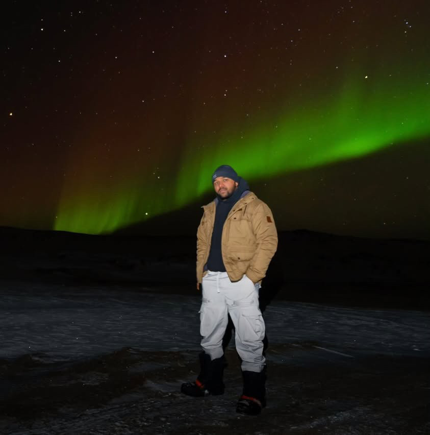

I started OTO because I saw gaps in the industry that deserved more attention, more care, and a higher standard. But more than that, I wanted to build something that reflected who I am: focused, driven, and deeply committed to doing things the right way. For me, this company isn’t just business, it’s personal. I’m here to bring a higher standard to the aviation services industry. At OTO, we don’t just offer services… we offer peace of mind.
My journey hasn’t been traditional, but it’s been intentional. I’ve worked from the ground up, solving problems, earning trust, and learning the kind of leadership you don’t get from textbooks. I believe in accountability, in excellence, and in building something lasting.
OTO is part of that legacy. But at the core of everything I do is one simple principle:
If we’re going to do it, we’re going to do it right.

Aviation is where I discovered true purpose. A field where precision is paramount, pressure is relentless, and excellence is non-negotiable. I’ve operated across some of Canada’s most demanding airport environments, from leading ramp operations to orchestrating complex service executions, with postings spanning from Toronto Pearson to Iqaluit International.
I chose to join OTO because the vision Shazzy shared with me was unmistakably clear and aligned with my own values. Here, precision isn’t a goal. It’s the foundation.
At OTO, I take pride in helping lead an enterprise where standards aren’t merely upheld, they’re elevated. Whether overseeing operations or empowering the team, I bring the same spirit: composed, prepared, and fully engaged. Because when clients entrust us with their aircraft, the expectation is nothing short of excellence.
And that is why every detail matters.OTO started the way many meaningful things do. In parking lots after long shifts, between classes, and during the kind of conversations you don’t forget. We weren’t just dreaming. We were designing. Naming. Vision-building. and I was refining the essence; what it should feel like, look like, and live like, long before launch.
From the very beginning, I knew OTO had to feel different. Quietly luxurious. Built with clarity, purpose, and presence. My role is to shape that. How we show up online, how our brand speaks without saying a word, how our details (and detailing) leave an impression long after the first click.
I craft the tone, the visuals, and the feeling you get when you see us for the first time. Not just aesthetics, but experience. My design choices echo how we operate: with care, with conviction, and with nothing out of place.
Because at OTO, Detailing may be our craft, but detail is our commitment.